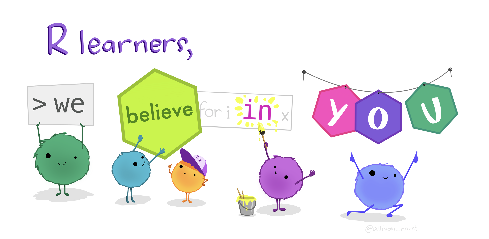

Introduzione all’analisi di RNASeq con R

Location
Il corso si terrà in:
Dipartimento di Biomedicina e Prevenzione
Università di Roma Tor Vergata
Edificio E Nord 2 piano aula 290
Via Montpellier 1
00133 Rome
Programma del corso
Primo giorno
| Orario | Tema |
|---|---|
| 9:30 | Introduzione al Corso |
| 10:15 | Ricerca Riproducibile |
| 10:45 | Pausa |
| 11:00 | Organizzazione dei dati |
| 12:30 | Pausa pranzo |
| 13:30 | Intro2R |
| 14:45 | Pausa |
| 15:00 | Starting with data |
| 16:30 | Considerazioni finali |
Secondo giorno
| Orario | Tema |
|---|---|
| 9:30 | Riepilogo giorno precedente |
| 9:45 | The dplyr package (parte I) |
| 10:45 | Pausa |
| 11:00 | The dplyr package (parte II) |
| 12:30 | Pausa pranzo |
| 13:30 | The ggplot2 package (parte I) |
| 14:45 | Pausa |
| 15:00 | The ggplot2 package (parte II) |
| 16:30 | Considerazioni finali |
Come installare i software necessari al corso
Per questo corso ci serviranno diversi software. Alcuni dei quali possono essere usati indistintamente su diversi sistemi operativi, altri invece no. Di seguito troverete le istruzioni per installare i software necessari sul vostro computer.
R
Per installare R cliccate sul seguente link e seguite le istruzioni per il vostro sistema operativo.
RStudio
Per installare RStudio cliccate sul seguente link e seguite le istruzioni per il vostro sistema operativo.
Slack
Seguire il link per iscriversi al canale Slack del corso
Docente
Marco Chiapello è un bioinformatico con lunga esperieza di utilizzo di R e Bioconductor. Dal 2016 è un istruttore certificato per l’organizzazione internazionale The Carpentries con la quale ha insegnato negli ultimi anni più di 10 corsi in varie università Europee di analisi dati con R. Dal 2015 insegna il corso PhD ToolBox presso l’Università degli Studi di Torino. Attualmente è Application Engineer presso Agilent Technologies nella divisione “Diagnostics & Genomics”.